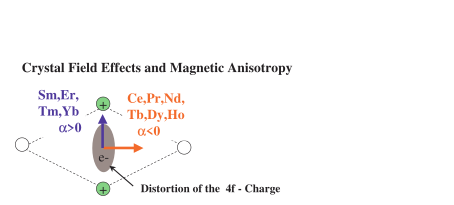

Next: Example - how to Up: singleion - a Crystal Previous: singleion - a Crystal Contents Index
SIMPLICIUS: I always tell in my lectures that the crystal field is the electrostatic field, which is produced by the charges of the crystal environment of a rare earth atom. It acts on the 4f electrons of the rare earth and causes magnetic anisotropy. In addition to the electrostatic origin of the crystal field there is also a contribution due to the bonding.
EWALD: Look, Simplicius , in Fig. 3 and 4 I can show the you the effect of the crystal field on the charge distribution. Such plots can be made by using the programs pointc to calculate the crystal field parameters and display_density to plot the charge density 11.
|  |
|  |
ORLANDO: Ewald , I appreciate the effort to do such beautiful plots of the charge density, but with your kind permission may I ask what relevance this has for experiments ? Normally in the literature I find the following expressions for the crystal field Hamiltonian 12
EWALD: This is exactly what the so1ion module of McPhase uses to evaluate quantitatively the crystal field influence.
In the case of isolating materials the crystal field parameters  can be obtained by the point charge model13,
in the McPhase suite use programs makenn and pointc to evaluate
the pointcharge model for a given crystal structure14.
For metals the conduction electrons screen the point charges and the determination
of the crystal field is usually only possible by fits to experimental data.
The program package McPhase may be used to solve such crystal field problems.
can be obtained by the point charge model13,
in the McPhase suite use programs makenn and pointc to evaluate
the pointcharge model for a given crystal structure14.
For metals the conduction electrons screen the point charges and the determination
of the crystal field is usually only possible by fits to experimental data.
The program package McPhase may be used to solve such crystal field problems.
SIMPLICIUS: In my lectures I am using a simpler way of dealing with crystal field anisotropy, it is to write instead of the first term in equ. 25
EWALD: Honorable Simplicius , indeed this is also possible - yet it is currently not possible to compute the parameters from a point charge model.
ORLANDO: For a diagonalisation of the single ion crystal field Hamiltonian the module we have always used the program so1ion(cfield, written by P. Fabi né Hoffmann). It can calculate also transition elements and the inelastic neutron scattering cross section.
EWALD: Exactly this program has been included into McPhase. It can be used to calculate crystal field problems for rare earth ions. There is a program so1ion, which is self explaining, provided the user has a basic knowledge of crystal field theory (see e.g. the famous article by Hutchings [27]). However, I would recommend how to use the program singleion to do crystal field calculation for rare earth ions, because setting up the calculation in this way it can be easily extended to intermediate coupling schemes if necessary.